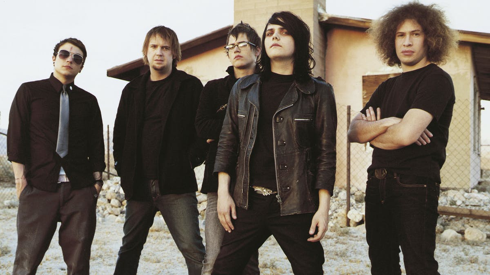

My Chemical Romance

My Chemical Romance (commonly abbreviated MCR or shortened to My Chem) is an American rock band from Newark, New Jersey.
The band's career timeline
- Early career (2001–2002) - The band was formed by frontman Gerard Way and drummer Matt Pelissier in Newark, New Jersey, soon after the September 11 attacks.
- Three Cheers for Sweet Revenge (2003–2006) - In 2003, the band signed a deal with Reprise Records. the band began working on their second album, which was titled Three Cheers for Sweet Revenge
- The Black Parade (2006–2009) - On August 3, 2006, the band completed shooting the videos for their first two singles from the album, "Welcome to the Black Parade" and although not released until January 2007, "Famous Last Words".
- Danger Days: The True Lives of the Fabulous Killjoys (2009–2011)- On May 27, 2009, My Chemical Romance's web designer, Jeff Watson, announced via the band's website that the band was headed to the studio to record their fourth full-length album.
- Conventional Weapons and break-up (2011–2013)- In February 2012, members of My Chemical Romance revealed that they had been building a studio in Los Angeles to record music for the band's fifth album under the working title MCR5, now with touring keyboardist James Dewees as an official member. On March 22, 2013, the band announced their break-up on their official website, issuing this statement:
- May Death Never Stop You and post-break-up (2013–2019) - On March 25, 2014, the band released a greatest hits collection, titled May Death Never Stop You, containing material spreading their entire career, as well a single unreleased track. The track "Fake Your Death" was made available digitally on February 17. It is the only song in MCR's discography that has James Dewees playing on keyboards.
- Reunion (2019–present) - On October 31, 2019, the band announced they would be reuniting in Los Angeles on December 20 and a new merchandise line. The concert grossed $1,451,745, with an attendance of 5,113.
Please see the Wikipedia page about this band. Click this link!